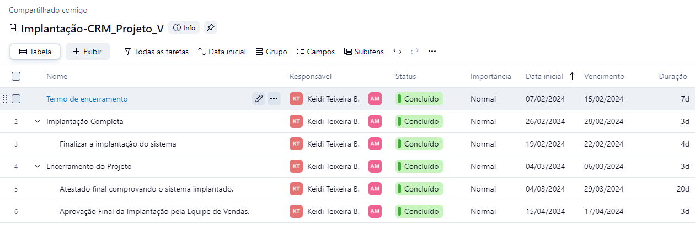

Home
Natureza
Linguagens
Matematica
Humanas
PPE
Tecnico
Crm
Nesta atividade utilizamos a ferramenta Wrike
para realizar o gerenciamento de projeto para
implantação de um sistema de CRM em desenvolvimento
.Gostei de utilizar a ferramenta Wrike para fazer a atividade.
